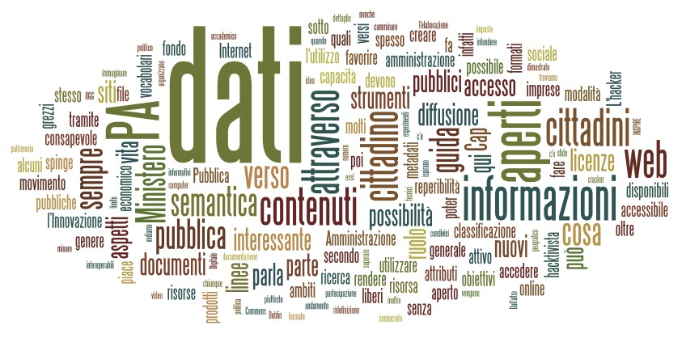
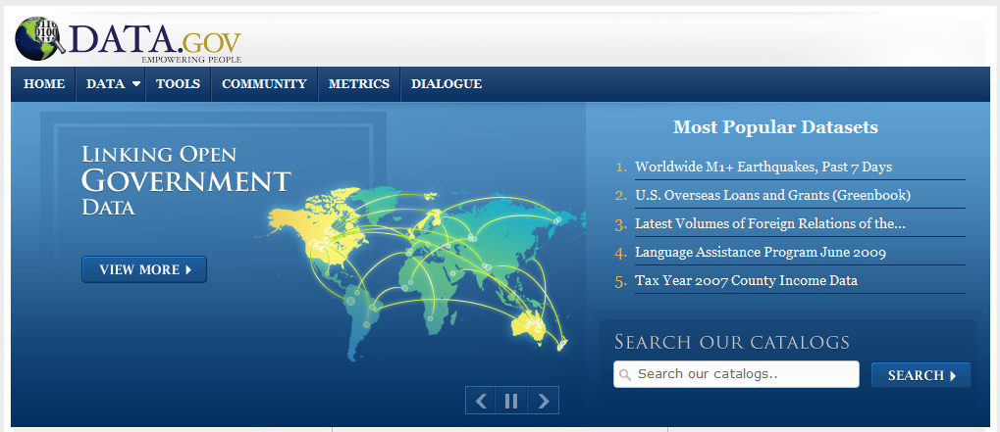
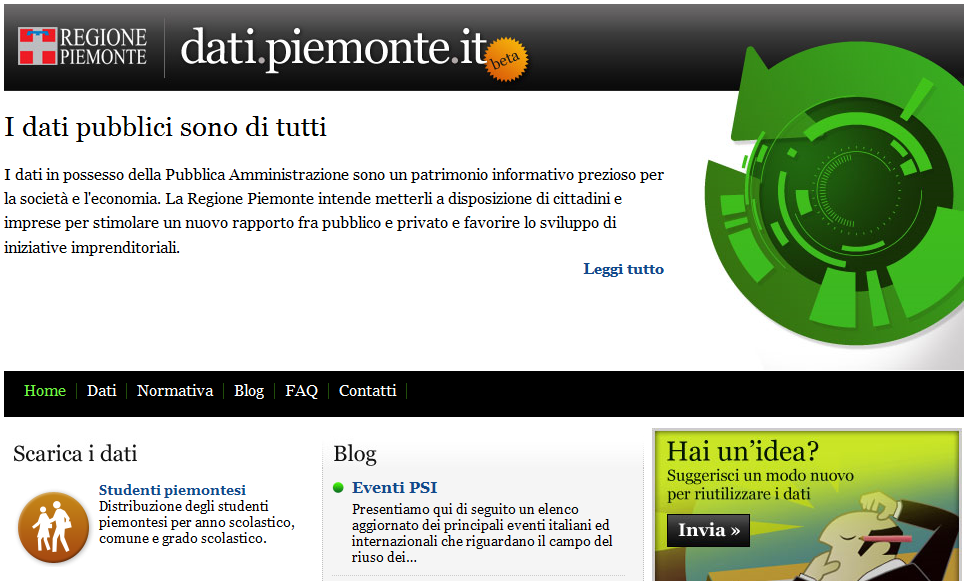

La notizia in sé pone due ordini di problematiche:
Il Presidente dell’INGV può decidere autonomamente di precludere l’accesso pubblico ai dati raccolti dall’Istituto?
Precludere l’accesso pubblico a tali dati corrisponde ad una scelta sensata?
Iniziamo dalla prima delicata questione.
L’Istituto Nazionale di Geofisica e Vulcanologia è stato istituito con il decreto legge n.381 del 29/09/99.
L’art. 2 del detto decreto legge recita:
Art. 2. – Attivita’ dell’INGV
1. L’INGV:
[...] f) rende disponibili per tutta la comunita’ scientifica i dati raccolti dalle proprie reti di monitoraggio, nazionale e locali.
[...]
Possiamo dire che rientra nella funzione dell’INGV la ricerca, il monitoraggio ma anche la diffusione delle notizie e degli allertamenti sui fenomeni sismici nazionali.
In tal senso sembrerebbe che non sia nella piena e libera disponibilità del Presidente dell’INGV prendere una scelta di tal genere, ovvero quella di oscurare sic ed simpliciter il sito informativo e, quindi, di non rendere pienamente pubblici i dati raccolti.
Eppure una certa lettura del citato articolo (disponibili per tutta la comunita’ scientifica) unitamente al combinato disposto con il DECRETO LEGISLATIVO 24 gennaio 2006, n. 36 (attuativo della direttiva 2003/98/CE relativa al riutilizzo di documenti nel settore pubblico), porterebbe a conclusioni diametralmente e drammaticamente opposte.
In sé la Direttiva Europea aveva lo scopo di liberalizzare l’accesso alle molteplici informazioni prodotte e detenute dalle Pubbliche Amministrazioni (dai dati di tipo economico a quelli scientifici, da quelli geografici ai dati turistici).
Tali informazioni, infatti, sono considerate come un’importante materia prima da utilizzare per i servizi e prodotti a contenuto digitale, tali da poter essere riutilizzati al fine di contribuire alla crescita economica e scientifica ed anche alla creazione di posti di lavoro. “La Direttiva invitava gli Stati membri a favorirne il riuso, incoraggiando gli enti pubblici a rendere disponibili i documenti e le informazioni in proprio possesso, a condizioni eque e trasparenti, a tutti i soggetti interessati al loro riutilizzo“.
Non possiamo dire che il D.L. abbia pienamente incarnato lo spirito della direttiva, anzi…
Se in Italia è vero che vige la legge 241 del 1990 sul procedimento amministrativo, è altresì vero che tale legge assegna il diritto di accesso ai documenti amministrativi solo ed esclusivamente a chi ha una situazione giuridicamente tutelata e collegata al documento richiesto. D’altro canto il Codice dell’amministrazione digitale del 2005 ha obbligato la pubblica amministrazione e rendere disponibili i dati in suo possesso in formato digitale, ma non ha inserito alcun obbligo alla trasparenza.
Eppure ancora oggi in Italia ci si scontra con logiche che non esiteremo a definire aberranti.
Resta quindi da chiarire quale sia realmente il dato pubblico cui tutti hanno diritto di accesso e la cui pubblicazione non può essere arbitrariamente inibita (come i dati sull’inquinamento atmosferico o marino, i dati dell’amministrazione pubblica, i dati sulla sanità, l’anagrafe pubblica degli eletti, etc.) e quali siano, d’altro canto, i meccanismi per tutelare il libero accesso a tali dati.
Qualcosa in Italia si sta muovendo, ad esempio lo statuto della Regione Toscana all’articolo 54 prevede “tutti hanno diritto di accedere senza obbligo di motivazione ai documenti amministrativi, nel rispetto degli interessi costituzionalmente tutelati e nei modi previsti dalla legge”. Il Codice dell’Amministrazione Digitale a partire dal 2005, all’art. 50, ha introdotto un importante principio di disponibilità del dati pubblici disponendo che gli stessi devono essere formati, conservati, resi accessibili e disponibili con l’uso delle ICT.
Quid iuris nel caso di specie?
Il ragionamento che ci sentiamo di sostenere è, sinteticamente, il seguente:
L’attività dall l’INGV è una attività di rilevanza pubblica, finanziata con denaro pubblico;
I dati che raccogli l’INGV hanno una rilevanza scientifica e sociale;
I dati raccolti dall’Ente, pertanto, devono essere resi pubblici ed in formato aperto;
L’INGV non può arbitrariamente smettere di fornire tali dati, se non attraverso procedure ben definite in accordo con gli altri enti istituzionali competenti (Protezione Civile e Ministeri competenti).
Alcune considerazioni vanno fatte poi a sostegno della libertà di informazione. Asserire che per evitare strumentalizzazioni sia opportuno censurare alla fonte i dati ricorda una ben nota vicenda sulla “necessità” di impedire che le intercettazioni telefoniche possano essere “usate male”. Se una informazione o un dato sono legittimamente resi disponibili al pubblico – e qui stiamo parlando di dati di fondamentale importanza per la pubblica incolumità – è questo stesso che, se li utilizza per sostenere delle tesi, per supportare notizie originali, o finanche per realizzare applicazioni – come abbiamo fatto proprio con i dati INGV noi di TANTO – se ne assume la piena e totale responsabilità.
Attenzione, un conto è la manipolazione del dato, ben altro il suo utilizzo così com’è nell’ambito di contesti anche originali, quali articoli, notizie, applicazioni. Manipolare un dato sui terremoti vuol dire aumentare o diminuire la magnitudo di un sisma, la sua localizzazione, il suo tempo di occorrenza, e chiunque lo facesse sarebbe certamente un criminale. Ma se il prof. Boschi per timore di strumentalizzazioni (magari facendo degli esempi ci aiuterebbe a capire) pensa di risolvere il problema oscurando tutto, contraddirebbe la missione stessa dell’INGV, che è quella di diffondere informazioni fondamentali per la pubblica incolumità.
Sarebbe sufficiente applicare ai dati sui terremoti una licenza “share alike ” con divieto di modifica ma libertà di utilizzo degli stessi. Poi, se il giornalista dice che in località tal dei tali si sta verificando uno sciame sismico con parecchi eventi di magnitudo tra 2. e 3.0 allora bisognerebbe chiedergli se sta tentando di fare solo la Cassandra o magari sensibilizzazione verso la cittadinanza, sulla quale bisognerebbe davvero concentrarsi senza inutili allarmismi, ma proprio favorendo approfondimenti critici e ponderati su quelle informazioni e dati che invece si vorrebbero “oscurare”.
In un’Italia che (finalmente) apre sempre più i dati, qualcuno pensa di chiuderli perché male utilizzati. Temere in generale l’informazione vuol dire darla vinta a quella superficiale, strillata. Il fatto stesso che le notizie sui terremoti siano aumentate negli ultimi anni (date un’occhiata al trend su Google, soprattutto dopo aprile 2009 ovviamente) non deve essere preso come motivo di cattiva informazione di per sé. Anzi, è un evento che va capitalizzato, perché finalmente la pubblica opinione si è svegliata sul rischio sismico, va solo “educata” ad essere più critica.
Il Ministero per la Pubblica Amministrazione e l’Innovazione ha emanato pochi giorni fa le Linee guida per i siti web delle pubbliche amministrazioni. Nel comunicato stampa ufficiale - in fondo al quale troviamo i link ai vari documenti – si afferma:
Il loro obiettivo è quello di suggerire criteri e strumenti utili alla razionalizzazione dei contenuti online, riducendo al tempo stesso il numero dei siti web pubblici ormai obsoleti. Tra gli obiettivi di una PA di qualità vi è infatti anche l’esigenza di fornire tramite web informazioni corrette, puntuali e sempre aggiornate nonché di erogare servizi sempre più fruibili a cittadini e imprese.
La cosa interessante è che si parla anche di dati aperti.Mi piace citare testualmente la quinta sezione, dedicata a “Criteri di indirizzo e strumenti per il trattamento dei dati, della documentazione pubblica e per la loro reperibilità”:
I dati e i contenuti prodotti e gestiti dalla pubblica amministrazione nell’esercizio delle proprie attività, rappresentano una risorsa strategica da un punto di vista sociale, politico, economico e culturale. Si tratta di un enorme patrimonio di conoscenza, che non sempre è facilmente accessibile da parte degli utenti. L’adeguata diffusione di queste informazioni (dati statistici e territoriali, rapporti socio-economici e ambientali, normativa, ecc.) può rappresentare un importante elemento per favorire la crescita economica e produttiva, la ricerca, l’innovazione, la competitività e per incoraggiare la partecipazione dei cittadini alla vita pubblica, dando loro la possibilità di valutare l’efficacia dell’attività dell’ente, nel rispetto dei principi di buon andamento e imparzialità.
Ma vediamo cosa c’è di concreto in queste linee guida.
Classificazione e semantica (Cap. 5.1)
Richiamando il Codice dell’Amministrazione Digitale (CAD), che delinea il principio di generale disponibilità in rete dei dati pubblici mediante la “possibilità di accedere ai dati senza restrizioni non riconducibili a esplicite norme di legge”, le linee guida definiscono le modalità attraverso le quali devono essere garantite reperibilità, interoperabilità e semplicità di consultazione dei dati stessi. Si parla di semantica!
I sistemi di classificazione utilizzati per le risorse dei siti web della pubblica amministrazione devono consentire l’interoperabilità semantica, ovvero la possibilità di individuare in modo omogeneo gli attributi che caratterizzano una risorsa (metadati) e i valori che gli attributi possono assumere (vocabolari) quando si descrivono i contenuti.
E si fa esplicito riferimento al Dublin Coreper quanto riguarda i metadati, si sottolinea la necessità di utilizzare “vocabolari” condivisi tra le PA per favorire l’integrazione delle loro risorse, facilitare e rendere più efficace la ricerca dei dati nei repository pubblici da parte dei cittadini. Repository che dovrebbero inoltre ispirarsi alla politica di accesso aperto ai documenti prodotti, secondo un modello simile a quello sviluppato in ambito accademico tramite il movimento Open Access. Si parla poi di classificazionesemantica multidimensionale a faccette, un paradigma dell’architettura dell’informazione piuttosto interessante, che è possibile approfondire in questo interessante articolo di Trovabile, rivista online al cuifeed RSS bisognerebbe assolutamente abbonarsi.
Formati aperti (Cap. 5.2)
Dopo una generica introduzione su “cos’è un formato aperto” e “perchè utilizzarlo”, il Ministero della PA si spinge a elencarne alcuni, che vi riporto qui sotto:
HTML/XHTML per la pubblicazione di informazioni pubbliche su Internet;
PDF con marcatura (secondo standard ISO/IEC 32000-1:2008);
XML per la realizzazione di database di pubblico accesso ai dati;
ODF e OOXML per documenti di testo;
PNG per le immagini;
OGG per i file audio;
Theora per file video.
Certo non sono esaustivi, e alcuni anche un pò limitanti sotto certi versi, ma è bene farsi intendere chiaramente proprio dalle PA, e gli esempi come questi sono necessari.
Contenuti aperti (Cap. 5.3)
E si arriva alle licenze di distribuzione dei contenuti, che il Ministero raccomanda garantiscano il riuso delle informazioni per fini non commerciali. A tale riguardo si spinge decisamente verso le licenze Creative Commons, raccomandando più in generale:
l’eventuale rilascio attraverso licenze l’uso che ne favoriscano la diffusione verso i cittadini e incoraggino il loro riutilizzo presso le imprese;
l’utilizzo di Internet come canale di comunicazione primario, in quanto il più accessibile e meno oneroso, attraverso il quale diffondere i flussi informativi;
la sicurezza dei dati;
l’utilizzo di formati aperti, standardizzati e interoperabili.

L’avvento del cittadino “hacktivista”
Queste linee guida contribuiscono a creare i presupposti affinchè la strada verso i dati aperti, liberi, accessibili (e speriamo grezzi) detenuti dalle PA venga spianata. Ma la loro emanazione non comporta in sè un cambiamento immediato e automatico, non almeno qui in Italia. Purtroppo nel nostro Paese, per raggiungere obiettivi concreti spesso è necessario ricorrere a provvedimenti normativi che impongano scadenze e stabiliscano in dettaglio gli aspetti tecnici, anche se questo ha i suoi pro e i suoi contro, come ha recentemente dimostrato il recepimento della Direttiva INSPIRE da parte del nostro Governo.
Il processo di riforma delle modalità con le quali le PA organizzano e rendono disponibili ai cittadini le informazioni che li interessano, passa infatti anche attraverso il ripensare il ruolo del cittadino come attivo e con diritto al loro accesso, oltre che attraverso una ridefinizione e standardizzazione degli aspetti tecnologici. E’ chiaro che rendere disponibili i dati con formati e contenuti aperti non basta. Dal suo canto, è lo stesso cittadino che deve rendersi consapevole di cosa può fare con i dati, c’è dunque bisogno di un suo ruolo attivo. Stiamo parlando del cittadino hacktivista.
Il termine “hacktivismo” deriva dalla fusione dell’inglese “hack” con “attivismo”. A questa idea o movimento si ispirano tutti coloro che ritengono fondamentale poter accedere liberamente ai dati e alle informazioni, per poterli poi utilizzare in svariati ambiti, andando oltre la loro semplice e diretta diffusione “tal quale”. L’hacker viene spesso associato erroneamente alla pirateria informatica, e confuso con il “cracker“, figura questa per molti versi negativa.
L’hacker è una persona che si impegna nell’affrontare sfide intellettuali per aggirare o superare creativamente le limitazioni che gli vengono imposte, non limitatamente ai suoi ambiti d’interesse (che di solito comprendono l’informatica o l’ingegneria elettronica), ma in tutti gli aspetti della sua vita. (da Wikipedia)
Insomma, da un lato abbiamo la PA che lentamente va verso la liberazione dei dati. Dall’altro il cittadino che non sempre è consapevole di quanto accade, o comunque della portata di una rivoluzione del genere. In mezzo ci siamo noi, blogger, professionisti e appassionati di dati, a cui piace “smanettare” con essi e creare nuovi oggetti, nuove applicazioni, “cablando” il dato economico e sociale con quello geografico, per dare vita a nuovi atlanti che sappiano raccontare il nostro mondo in modi nuovi. E il nostro desiderio ultimo è quello che chiunque abbia un interesse e un minimo di voglia di mettersi in gioco e imparare, possa farlo con il minore sforzo possibile. Spesso qui su TANTO presentiamo esperimenti basati su strumenti – in genere web – che consentono l’elaborazione e la rappresentazione dei dati in maniera molto intuitiva, che non richiedono capacità da “programmatore”. In fondo l’unico limite è la fantasia, la capacità di immaginare cosa poter fare con dei dati aperti, liberi e grezzi.
Il percorso è lungo, ma molti hanno già cominciato a camminare, e sapere che anche il Ministero della Pubblica Amministrazione e l’Innovazione ha deciso di rivestire un ruolo trainante, non può che far sperare per il meglio.
E’ appena trascorso un mese dall’entrata in esercizio del primo portale Open Data italiano, dati.piemonte.it, il quale è stato accolto favorevolmente dagli entusiasti sostenitori italiani del movimento Open Data ed addirittura classificato come portale governativo di prima categoria dal gruppo PSI (Public Sector Information) della Commissione Europea, in quanto garantisce l’accesso diretto ai dati, analogamente a data.gov.
Pur trattandosi di una versione beta, rappresenta indubbiamente una pietra miliare che dimostra la fattibilità dell’Open Data anche in Italia, nonostante le difficoltà di cui si accennava in questo recente post.
Ma vediamo in dettaglio di cosa si tratta. La pagina di accesso al portale si presenta con una grafica semplice ed accattivante su cui campeggia in primo piano il principio di fondo dell’iniziativa, una vera e propria dichiarazione di intenti in perfetto stile Government 2.0 ed in completo accordo con il senso della Direttiva 2003/98/CE del Parlamento europeo:
I dati pubblici sono di tutti
I dati in possesso della Pubblica Amministrazione sono un patrimonio informativo prezioso per la società e l’economia. La Regione Piemonte intende metterli a disposizione di cittadini e imprese per stimolare un nuovo rapporto fra pubblico e privato e favorire lo sviluppo di iniziative imprenditoriali.
A valle di questa esaltante premessa, seguono immediatamente pochi ma efficaci menù che rimandano ai contenuti del portale, dopodiché si va direttamente al sodo, accedendo direttamente ad un piccolo assaggio dei dati grezzi finora messi a disposizione, ad un estratto delle discussioni più recenti nel blog ed, infine, ad una sezione dedicata al riuso dei dati pubblici, dotata di una presentazione multimediale esplicativa sull’argomento.
Curiosando all’interno della sezione Dati, è possibile osservare che:
al momento sono presenti solo alcuni set di dati, tuttavia assicurano che a questi se ne aggiungeranno progressivamente degli altri, anche su richiesta degli utenti;
i dati grezzi sono descritti da metadati (informazioni sui dati);
sono resi disponibili in formato CSV e, di conseguenza, sono consultabili mediante un qualsiasi editor di testo;
sono aggregati a scala provinciale e, talvolta, comunale;
è facile verificare come siano indicizzati nei principali motori di ricerca e quindi siano di facile reperibilità anche all’esterno del portale;
infine, sono corredati di un contratto di licenza in cui si afferma chiaramente che la Regione Piemonte ne detiene la titolarità e ne “autorizza la libera e gratuita consultazione, estrazione, riproduzione e modifica [...] da parte di chiunque vi abbia interesse per qualunque fine, ovvero secondo i termini della licenza Creative Commons – CC0 1.0 Universal” (dominio pubblico).
Benissimo! Siamo certamente ancora distanti dalla mole impressionante di contenuti presenti in data.gov e data.gov.uk, tuttavia sono largamente rispettate in sostanza le indicazioni del Manifesto stilato da The Guardian, contenente a mio avviso un insieme minimo di principi pienamente condivisibile.
Il rilascio dei dati grezzi prodotti dalla PA – in formato aperto e con licenze che ne consentono il riuso – può produrre effetti benefici tanto nella trasparenza dei processi decisionali delle amministrazioni, quanto nella qualità dei servizi e nell’economia immateriale che vi ruoterebbe attorno. In particolare, i raw data costituiscono una risorsa dall’enorme potenziale nascosto, che è possibile far venire allo scoperto sfruttando le relazioni esistenti tra i dati in maniera originale e creativa in fase di produzione di nuovi servizi, magari ottenendo applicazioni assolutamente impensabili da parte degli stessi produttori di dati.
TANTO si occupa ormai da diverso tempo di sensibilizzare i suoi lettori verso l’utilizzo creativo ed appassionato dei vari strumenti del web 2.0 disponibili in rete, sottolineando come essi possano rappresentare un importante mezzo di sviluppo e di crescita sia per chi si occupa di geomatica, che per l’intera collettività. A tal fine, mi piace riportare alcuni stralci di un commento di Pietro Blu Giandonato relativo a questo interessante post:
esiste ormai sul web una messe di strumenti, applicazioni, servizi, fonti di dati formidabile, che sta crescendo vertiginosamente, e della quale non resta altro che coglierne le opportunità a piene mani. [...] In un paio d’ore, tra progettazione e realizzazione, è possibile tirare su un mashup potente, semplice e veloce per mettere in strada dati reperiti altrove da più fonti, o addirittura originali! [...] E’ necessario cambiare il paradigma della geomatica in Italia, passando dal GIS come unico strumento per la rappresentazione e gestione dei dati, arrivando a una sorta di “cloudmapping” realizzato con le decine di strumenti web 2.0 che esistono in giro. Una strada peraltro che richiede essenzialmente fantasia, creatività e intuito, che permette di costruire grandi cose con piccole azioni. Il problema è ovviamente immaginarle…
Così, mi sono chiesto: è possibile visualizzare i raw data piemontesi all’interno di una piccola applicazione di web mapping facendo in modo che i risultati delle interrogazioni siano dei bei grafici, piuttosto che noiosi numeri? Certamente! Ho scelto quindi i dati relativi alle dotazioni ICT presso i cittadini e ne ho effettuato il download accettandone le condizioni di utilizzo. Trattandosi di dati in forma tabellare, li ho semplicemente importati all’interno di un foglio di calcolo di Google Docs e poi pubblicati in modo tale che “chiunque abbia accesso a Internet possa trovarli e visualizzarli“, ottenendo la struttura seguente:
I dati prescelti possono essere analizzati secondo differenti chiavi di lettura (query). Ad esempio, è possibile risalire alle dotazioni ICT per provincia e per anno, così come alla singola dotazione per provincia negli anni 2005-2009. Mi sono posto pertanto il seguente obiettivo: individuare lo strumento web 2.0 più agevole per interrogare la tabella come all’interno di un database, in modo da poter estrarre di volta in volta solo i dati necessari per ottenere il grafico corrispondente ad una particolare query. Dopo vari tentativi con Yahoo! Pipes ed YQL (Yahoo! Query Language), peraltro abbastanza ben riusciti (li trovate qui), ho individuato nel Query Language delle Google Visualisation API un’alternativa relativamente semplice ed efficiente, tale da scongiurare la necessità di dover configurare un web server e risolvere le beghe informatiche dovute alle cross-domain restrictions. Si tratta praticamente delle stesse API che consentono di ottenere dei grafici a partire dai dati.
A proposito della componente geografica, ho deciso di utilizzare come client OpenLayers (di cui si parla spesso qui su TANTO) per via della sua enorme versatilità e semplicità d’uso, un servizio TMS (Tile Map Service) di OpenStreetMap come layer di base ( i “linked data” per eccellenza!), ed i confini ISTAT delle province reperibili qui, utilizzabili per scopi non commerciali a patto di citarne la fonte. Questi ultimi sono stati convertiti nel formato GML ed opportunamente trasformati nel sistema WGS84 (EPSG:4326).
In definitiva, il funzionamento dell’applicazione è molto semplice ed intuitivo: scelta una delle opzioni (query) poste in basso, per interrogare una delle province piemontesi occorre semplicemente cliccare sulla corrispondente entità vettoriale che la rappresenta in mappa. Comparirà successivamente un popup contenente la denominazione della provincia, il titolo del grafico ed il grafico stesso (dotato di legenda, se necessaria). Questo è il mashup risultante:
Per concludere, ho alcune interessanti novità da segnalare. Nel frattempo, negli altri Paesi il modello di Open Government procede inesorabilmente la sua marcia. In particolare, nel Regno Unito è stata appena istituita una Commissione per la Trasparenza nel Settore Pubblico con il compito di guidare l’agenda sulla Trasparenza del Governo, rendendola un elemento cardine di ogni sua attività e assicurando che tutti i Dipartimenti presso Whitehall rispettino le scadenze fissate per il rilascio di nuovi dataset pubblici. Inoltre, è responsabile della definizione di standard sui dati aperti per l’intero settore pubblico, recependo ciò che è richiesto dal pubblico e assicurando l’apertura dei dataset più richiesti. Un primo importante compito della Commissione attualmente in itinere consiste nella definizione dei Principi di Trasparenza dei Dati Pubblici mediante il diretto coinvolgimento degli utenti.
Un’altra novità di rilievo è la nascita del portale italiano CKAN, un progetto ad opera della Open Knowledge Foundation. Si tratta di un catalogo di dati e contenuti aperti creato allo scopo di facilitarne la ricerca, l’uso e il riuso, al quale è possibile contribuire liberamente, fornendo informazioni sulle banche dati (metadati), quali l’URL della risorsa, l’autore e il soggetto che detiene la titolarità dei dati, la versione e la licenza d’uso.
Sempre in Italia, un’altra notizia che fa ben sperare: il Ministro per la Pubblica Amministrazione e l’Innovazione, durante un’intervista a Frontiers of Interaction 2010, ha annunciato la creazione di un data.gov italiano entro la fine dell’anno. In particolare, la pubblicazione dei dati pubblici dovrebbe servire da contromisura ai fenomeni di corruzione legati agli appalti. Finalmente!
Esistono delle svolte epocali che lasciano il segno nel mondo dell’informazione geografica. In passato, una di queste è scaturita sicuramente dall’Executive Order 12906, emanato nel 1994 dall’allora presidente degli USA Bill Clinton, che ha portato alla costituzione della National Infrastructure of Spatial Data (NSDI) e senza il quale forse oggi non esisterebbe l’ossatura portante dell’infrastruttura di dati spaziali europea INSPIRE.
Un documento di portata eccezionale molto recente è, invece, il Memorandum sulla Trasparenza e l’Open Government di Barack Obama (gennaio 2009) che, sancendo i principi dell’Open Government (trasparenza, partecipazione e collaborazione), ha prodotto la nascita del portale governativo americano data.gov al fine di incrementare l’accesso pubblico ai dati prodotti dai vari dipartimenti del governo federale, dati che sono rilasciati rigorosamente in formato aperto (Open Data).

Altro provvedimento scaturito dal memorandum presidenziale è l’Open Government Directive del dicembre 2009 (già citata da Sergio Farruggia nel suo ultimo post), che definisce nel dettaglio gli adempimenti dei dipartimenti esecutivi e delle agenzie per l’implementazione dei suddetti principi secondo scadenze temporali molto ristrette (solo 45-60 giorni!).
Una forte carica di innovazione era d’altronde già presente nell’illuminante talk di Tim Berners-Lee al TED 2009 (di cui TANTO si era occupato qui), in cui si auspicava un nuovo cambio di prospettiva della rete delle reti da attuarsi mediante il rilascio dei raw data: solo ponendo in relazione tra loro i dati grezzi, ottenendo i linked data, è possibile portare alla luce il loro enorme potenziale inesplorato, ovvero quel valore aggiunto implicitamente contenuto in essi. Era nato dunque l’Open Data Movement.
Tali eventi non hanno tardato a sortire i loro effetti in giro per il mondo. Da allora stiamo assistendo al proliferare di altre iniziative in tal senso, tra le quali spiccano i portali del Regno Unito, della Nuova Zelanda e dell’Australia. Inoltre, anche la Banca Mondiale (si veda il post di Pietro Blu Giandonato) e, sempre in UK, l’Ordnance Survey hanno recentemente liberato una cospicua parte dei dati in loro possesso al fine di promuoverne il riuso.
Brown asked: “What’s the most important technology right now? How should the UK make the best use of the internet?” To which the invigorated Berners-Lee replied: “Just put all the government’s data on it.” To his surprise, Brown simply said “OK, let’s do it.”
La direttiva sull’Open Government rappresenta non solo un importante tassello strategico nel disegno della trasparenza politica obamiana, ma produce concretamente anche la possibilità di sviluppare business, innescando “una competizione sulla qualità dei servizi e delle applicazioni prodotte, che genererebbe sicuramente una ripresa di tutto il settore dell’economia immateriale“, come spiega Gianluigi Cogo nell’approfondimento di Nóva dedicato all’Open Data.
La liberalizzazione dei dati secondo standard aperti ha infatti scatenato iniziative come Apps for democracy che, nell’arco di un mese, ha prodotto la realizzazione di ben 47 applicazioni di pubblica utilità per il web, iPhone e Facebook con un ritorno economico sull’investimento stimato intorno al 4000%. Per comprendere meglio le potenzialità derivanti dall’uso degli open data, un interessante caso di studio ci viene offerto dal Canada, dove è stata scoperta una maxi frode fiscale che ha coinvolto le maggiori società di beneficenza del Paese per un importo pari a ben 3,2 miliardi di dollari.
E’ possibile quindi realizzare un primo punto della situazione del movimento globale Open Data, così come ha fatto Tim Berners-Lee al TED 2010 (il talk è sottotitolato anche in italiano):
L’esempio di utilizzo degli Open Data forse più emblematico presentato da Berners-Lee è quello della mappa disegnata da un avvocato per dimostrare la forte correlazione esistente tra le case occupate da bianchi e quelle collegate all’acquedotto, risultato della discriminazione razziale verso i neri a Zanesville (Ohio, USA), che ha convinto il giudice a condannare la contea ad un risarcimento di oltre 10 milioni di dollari. Tale applicazione è la semplice dimostrazione di quali interessanti informazioni sia possibile ottenere, ponendo in relazione gli Open Data, in settori quali ad esempio l’epidemiologia geografica (a tal proposito si veda questo post).
Inoltre, proprio in questi giorni, è trascorso il primo anniversario di data.gov ed è possibile trarne un primo entusiasmante bilancio direttamente dal CIO Vivek Kundra sul blog della Casa Bianca.
Di fronte all’evidente pragmatismo del mondo anglosassone, probabilmente il lettore si chiederà cosa si sta facendo adesso o si farà in futuro in Italia. In tal senso, si ritiene opportuno segnalare questa intervista ad Ernesto Belisario, avvocato ed esperto in diritto delle nuove tecnologie, secondo il quale la pubblicazione e l’accesso ai dati pubblici in Italia è attualmente una sorta di percorso ad ostacoli. In particolare, egli sostiene che da un lato ci sono problemi a livello organizzativo:
la Pubblica Amministrazione, fatte le dovute eccezioni, generalmente non è pienamente consapevole del consistente patrimonio di dati in suo possesso;
soltanto una minima parte dei dati in possesso della PA è disponibile in formato digitale e, nei casi in cui lo è, non sempre è garantita l’interoperabilità;
inoltre, i dati non sempre sono acquisiti con una licenza tale da consentirne la pubblicazione ed il riuso.
Dall’altro, esistono anche evidenti limiti a livello normativo:
la legge generale sul procedimento amministrativo che, a differenza degli USA in cui ogni cittadino – in quanto tale – ha il diritto di accesso ai dati pubblici (right to know), prevede il possesso di un interesse specifico e qualificato per poterlo fare (need to know);
una normativa sulla privacy troppo rigorosa che limita notevolmente la trasparenza e l’accesso ai dati, impedendone di fatto l’indicizzazione da parte dei motori di ricerca;
il Codice dell’Amministrazione Digitale che, pur avendo una portata rivoluzionaria, in quanto consentirebbe alla PA di rendere disponibili i propri dati in formato aperto, tuttavia non va a modificare la legge sulla trasparenza amministrativa e né la legge sulla privacy.

In definitiva, c’è molto lavoro da fare, ma qualcosa comincia a muoversi. Recentemente stiamo assistendo all’apertura del PCN (futuro geoportale nazionale di INSPIRE) nei confronti del movimento OpenStreetMap (si veda il seguente post) e alla nascita del primo portale Open Data italiano, dati.piemonte.it. Sicuramente, non è finita qui!
La Banca Mondiale , come molti sapranno, fornisce prestiti agevolati ai paesi in via di sviluppo per finanziare programmi volti alla riduzione della povertà. Come spesso accade, non è tutto oro quello che luccica, e infatti da molti anni è stata lanciata una campagna internazionale per la sua riforma.
Ma non è dei lati oscuri che ogni banca ha – e ai quali nemmeno la World Bank sfugge – che voglio parlare qui oggi, ma della decisione di liberare i dati che questa istituzione detiene, e che riguardano i Paesi di tutto il mondo. Le attività di ricerca e finanziarie che la Banca svolge, si basano infatti su dati di tipo demografico, produttivo e ambientale di assoluto valore, e la decisione di renderli disponibili è un grande passo verso l’idea di dati “grezzi, aperti e liberi”.
Come fa presente Andrew Turner in un suo recente post, la Banca Mondiale aveva da tempo rilasciato delle API per poter utilizzare la propria banca dati in applicazioni esterne (c’è perfino un’app per iPhone), ma poterli ora scaricare in formati aperti (CSV, XML) li rende davvero accessibili a chiunque, per qualunque scopo.
Il catalogo dei dati è consultabile direttamente sul sito della WB, per Paese (qui l’esempio relativo all’Italia) con la possibilità di visionare direttamente in una stessa pagina i trend dei classici indicatori finanziari (PIL, export, reddito pro-capite, ecc.), demografici (indice alfabetizzazione, disoccupazione, educazione), sanitari (mortalità) e ambientali (produzione CO2 pro-capite). Ogni singolo dataset è poi scaricabile, come detto, in formati aperti utilizzabili in qualunque applicazione e per qualunque scopo.
Lezioni online per spiegare scienza e tecnologia Oilproject organizza con l’Istituto Italiano di Tecnologia una serie di lezioni divulgative su neuroscienze, nanotecnologie, farmacologia e macchine intelligenti, per raccontare al grande pubblico lo stato dell’arte della ricerca di base e applicata. Qui tutti i dettagli. Leggi tutto... (0)
Il GFOSS Day 2011 è a Foggia I prossimi 24 e 25 novembre l’Università degli Studi di Foggia ospiterà il GFOSS DAY 2011, organizzato come di consueto dall’Associazione Italiana per l’Informazione Geografica Libera GFOSS.it Leggi tutto... (1)
Mappali, denunciali e... tassa.li Tassa.li è una interessante startup realizzata da un gruppo di giovani tecnologi, con l’intento di rendere facile la denuncia di esercizi commerciali che non rilasciano il regolare scontrino fiscale. E in un periodo nero come questo, molta gente avrà una gran voglia di partecipare. Grazie a una applicazione disponibile sia per iOS che Android, è infatti possibile in pochi clic geotaggare l’esercizio e riportare la somma dello scontrino non emesso. Il tutto in maniera assolutamente anonima. E questi ragazzi dimostrano di vedere molto lontano, perché presto rilasceranno i dati raccolti in forma totalmente aperta e libera. (7)
TANTO non rappresenta una testata giornalistica ai sensi della legge n. 62 del 7.03.2001, in quanto non viene aggiornato con una precisa e determinata periodicita'. Pertanto, in alcun modo puo' considerarsi un prodotto editoriale.


{kind=link}